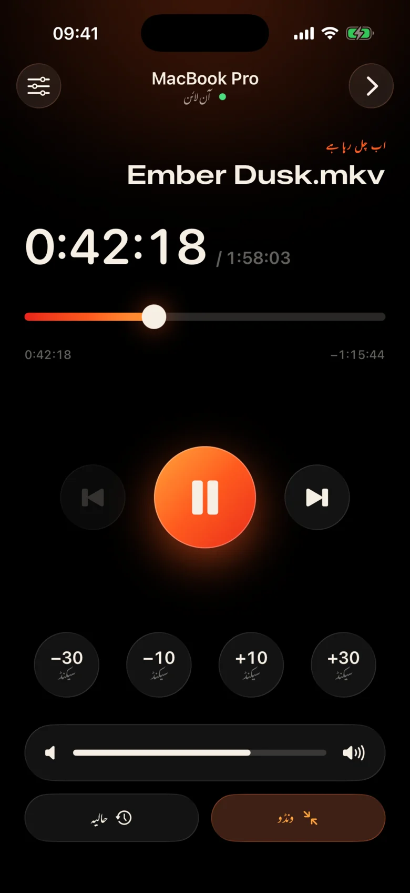
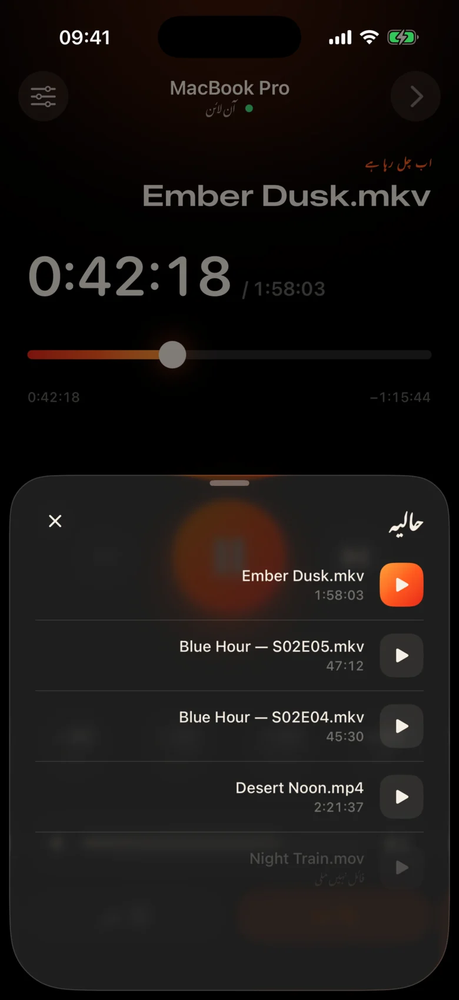
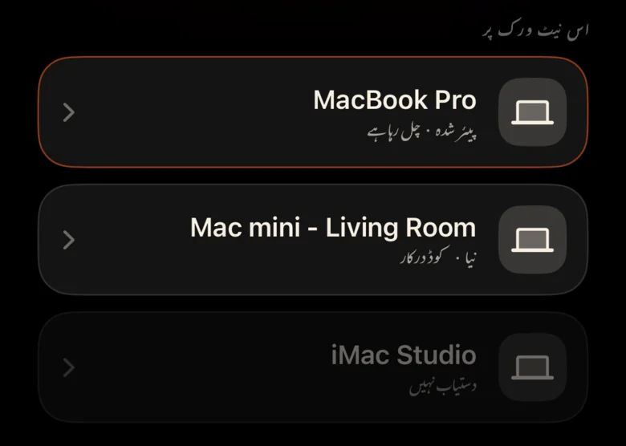
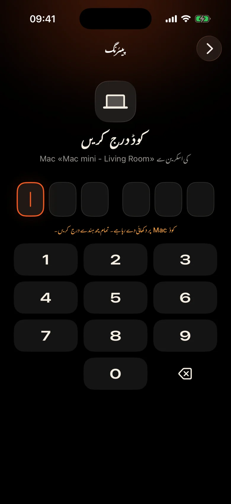

Mac کمرے کے اس پار ہے۔
یہ دیوار سے پروجیکٹر میں لگا ہوا ہے۔ ہر توقف کا مطلب ہے اٹھنا، اندھیرے میں ٹریک پیڈ تلاش کرنا اور ایک چھوٹے سے کنٹرول بار پر جھانکنا۔
Kinrox: اپنے ہاتھ میں موجود فون پر تھپتھپائیں۔
Kinrox آپ کے Mac پر کوئی بھی ویڈیو چلاتا ہے — اور آپ کے iPhone کو اس کے ریموٹ میں بدل دیتا ہے۔ پروجیکٹر پر MacBook، آپ صوفے پر ہیں: توقف کریں، 10 سیکنڈ پیچھے جائیں، والیوم کم کریں یا کمبل چھوڑے بغیر اگلی قسط شروع کریں۔


یہ دیوار سے پروجیکٹر میں لگا ہوا ہے۔ ہر توقف کا مطلب ہے اٹھنا، اندھیرے میں ٹریک پیڈ تلاش کرنا اور ایک چھوٹے سے کنٹرول بار پر جھانکنا۔
Kinrox: اپنے ہاتھ میں موجود فون پر تھپتھپائیں۔
ایک منظر میں سرگوشی، دوسرے میں دھماکے — اور کوئی اگلے کمرے میں پہلے ہی سو رہا ہے۔
Kinrox: آپ کے انگوٹھے کے نیچے والیوم سلائیڈر۔
IP پتوں اور پاس ورڈز کے ساتھ ویب پینلز، ایک براؤزر ٹیب جو سو جاتا ہے، میز کے لیے بنائے گئے بٹن — صوفے کے لیے نہیں۔
Kinrox: آپ کے Mac کو بذات خود ایک کوڈ کے ساتھ جوڑتا ہے۔

بڑے اہداف، ایک گہرا گرم تھیم اور ہر پریس کے نیچے ہیپٹکس کا ہلکا نل۔ آپ اسے فلم سے دور دیکھے بغیر استعمال کر سکتے ہیں۔
ہر بٹن اتنا بڑا ہے کہ نیند میں بھی آسانی سے دبایا جا سکے۔
ایک لائن چھوٹ گئی؟ ایک ٹیپ واپس۔ دو کے ساتھ تعارف کو چھوڑ دیں۔
Kinrox کا اپنا حجم، 0 سے 100 تک۔ Mac کا سسٹم والیوم اچھوتا رہتا ہے۔
اسی فولڈر سے پچھلی اور اگلی فائل، Finder ترتیب میں۔
کوئی ایسی چیز چنیں جسے آپ پہلے دیکھ چکے ہیں — یہ Mac پر کھلتا ہے۔
ٹائم لائن کو کسی بھی لمحے گھسیٹیں، صوفے سے پوری اسکرین سوئچ کریں۔
کوئی IP پتے، کوئی پاس ورڈ، کوئی اکاؤنٹ نہیں۔ پہلے کوڈ کے بعد آپ کا iPhone از خود دوبارہ جڑ جاتا ہے۔
فائل کو Kinrox میں گھسیٹیں یا ⌘ O دبائیں ریموٹ سرور بطور ڈیفالٹ آن ہے۔
جب دونوں آلات ایک ہی Wi‑Fi پر ہوتے ہیں تو Kinrox خود ہی ظاہر ہوتا ہے۔

Mac ایک کوڈ دکھاتا ہے جو دو منٹ تک رہتا ہے۔ تین غلط کوششیں اور یہ چلی گئی۔


Alex’s iPhone، Kinrox کو کنٹرول کرنا چاہتا ہے۔ یہ کوڈ فون پر درج کریں۔
 کوڈ کی میعاد 1:47 میں ختم ہوگی
کوڈ کی میعاد 1:47 میں ختم ہوگی
ویڈیو انٹرفیس ہے۔ جب آپ کو ضرورت ہو تو شیشے کی ایک پتلی پرت ظاہر ہوتی ہے اور تین سیکنڈ کے بعد چھپ جاتی ہے۔

libmpv پر بنایا گیا، mpv اور IINA کے پیچھے انجن۔ ایمبیڈڈ یا بیرونی آڈیو اور سب ٹائٹلز کا انتخاب کریں۔ VideoToolbox ہارڈویئر ڈی کوڈنگ کو ہینڈل کرتا ہے۔
Kinrox فولڈر میں ویڈیوز کو لائن اپ کرتا ہے اور جب ایک ایپیسوڈ ختم ہوتا ہے تو اگلا شروع ہوتا ہے — Finder کی طرح "10" سے پہلے "2"۔
کی بورڈ ⏯ کیز، کنٹرول سینٹر اور اب چل رہا ہے کنٹرول Kinrox۔ 20 حالیہ فائلیں اسٹارٹ اسکرین پر انتظار کرتی ہیں۔
آپ کے Mac اور iPhone آپ کے مقامی نیٹ ورک پر براہ راست پلے بیک کمانڈز کا تبادلہ کرتے ہیں۔ آپ کی ویڈیوز Mac پر رہتی ہیں۔
Bonjour پر دریافت، کنکشن صرف آپ کے اپنے سب نیٹ سے۔ عوامی پتے اور سیلولر سے انکار کر دیا گیا ہے۔
ہر کمانڈ ایک انکرپٹڈ چینل میں سفر کرتی ہے۔ جوڑا بنانے والے ٹوکن دونوں آلات پر کیچین میں رہتے ہیں۔
X25519HKDF-SHA256ChaCha20-Poly1305کوئی اکاؤنٹس یا استعمال کے تجزیات نہیں۔ Mac منفرد شناخت کنندگان یا سسٹم پروفائلنگ کے بغیر روزانہ ایک عوامی اپ ڈیٹ فیڈ کو چیک کرتا ہے۔ اس ویب سائٹ میں کوئی تجزیات یا کوکیز نہیں ہیں۔
ریموٹ عنوانات اور دورانیے کو دیکھتا ہے، کبھی بھی راستے فائل نہیں کرتا ہے۔ حالیہ فائل کو کھولنا Mac پر حل ہو جاتا ہے۔
Kinrox Swift 6 میں اور libmpv کے اوپر SwiftUI لکھا ہوا ہے۔ پلیئر کی ہر لائن، ریموٹ اور پروٹوکول GitHub پر ہے۔
ماخذ سے بنائیں# Xcode 26.5, XcodeGen and mpv from Homebrew
brew install xcodegen mpv pkg-config
git clone https://github.com/awaik/Kinrox.git
cd Kinrox
cp -n Config/Signing.local.xcconfig.example \
Config/Signing.local.xcconfig
# Set your team: docs/runbooks/RUNBOOK-BUILD-AND-SIGNING.md
./Scripts/check-env.sh
./Scripts/generate.sh
xcodebuild -workspace Kinrox.xcworkspace \
-scheme PlayerMac -configuration Debug \
-destination 'platform=macOS,arch=arm64' \
-derivedDataPath DerivedData build
open DerivedData/Build/Products/Debug/Kinrox.appپلے بیک اور ریموٹ کنٹرول انٹرنیٹ تک رسائی کے بغیر کام کرتے ہیں جب Mac اور iPhone ایک Wi‑Fi نیٹ ورک کا اشتراک کرتے ہیں۔ Mac روزانہ اپ ڈیٹ کی جانچ کے لیے HTTPS استعمال کرتا ہے اور جب آپ اسے انسٹال کرنے کا انتخاب کرتے ہیں تو اپ ڈیٹ ڈاؤن لوڈ کرتا ہے۔
جی ہاں Kinrox آپ کے Mac جو کچھ بھی دکھاتا ہے اس پر چلتا ہے — پروجیکٹر، HDMI پر ٹی وی، یا AirPlay کے ساتھ منسلک ڈسپلے۔
Macs Apple silicon کے ساتھ macOS 14 Sonoma یا بعد میں، اور iPhones iOS 17 یا بعد میں۔ Intel Macs ابھی تک تعاون یافتہ نہیں ہے۔
جی ہاں ہر iPhone اپنے کوڈ کے ساتھ ایک بار جوڑتا ہے۔ ایک ہی وقت میں چار ریموٹ تک جڑے جا سکتے ہیں۔ آپ پلیئر کی ترتیبات میں ان میں سے کسی کو بھی منسوخ کر سکتے ہیں۔
جی ہاں Mac پر، آڈیو اور سب ٹائٹلز بٹن یا آڈیو اور سب ٹائٹلز مینو استعمال کریں۔ ایمبیڈڈ ٹریکس کا انتخاب کریں، نیسٹڈ فولڈرز میں بیرونی فائلیں تلاش کریں، یا سب ٹائٹلز کو آف کریں۔ Kinrox اگلی ایپی سوڈ کے لیے آپ کی پسند کو یاد رکھ سکتا ہے۔
کچھ نہیں Kinrox GNU GPL v3 کے تحت مفت اور اوپن سورس ہے۔
Kinrox برائے Mac اور iPhone۔ مفت، اوپن سورس، اور فلمی راتوں کے لیے بنایا گیا ہے۔